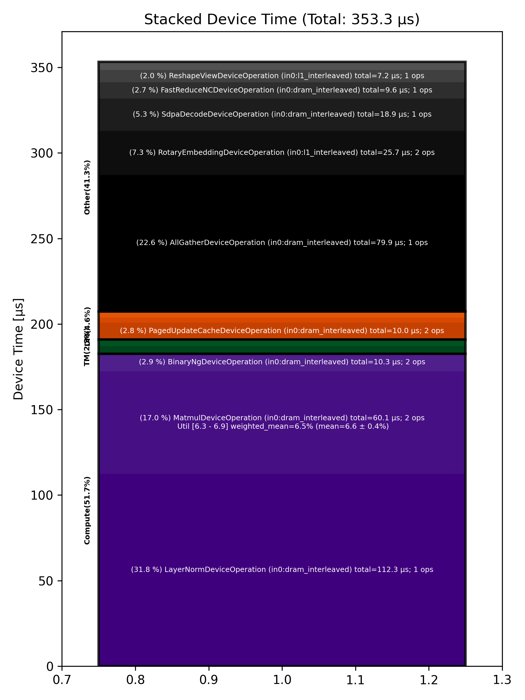

🚀 Performance Report 🚀 ======================== ID Total % Bound OP Code Device Device Time Op-to-Op Gap Cores DRAM DRAM % FLOPs FLOPs % Math Fidelity ------------------------------------------------------------------------------------------------------------------------------------------------------------------------ 18 2.1 % LayerNormDeviceOperation 20 112 μs 1 BF16, BF16 => BF16 52 0.9 % SLOW MatmulDeviceOperation 32 x 2880 x 640 12 45 μs 1 μs 20 46 GB/s 15.9 % 2.6 TFLOPs 6.3 % HiFi2 BF16 x BFP8 => BF16 90 3.8 % NLPCreateQKVHeadsDecodeDeviceOperation 16 5 μs 195 μs 32 BF16 => BF16 111 2.6 % ShardedToInterleavedDeviceOperation 6 1 μs 133 μs 32 BF16 => BF16 145 4.6 % RotaryEmbeddingDeviceOperation 4 13 μs 230 μs 32 BF16, BF16 => BF16 188 4.7 % SliceDeviceOperation 18 2 μs 246 μs 64 BF16 => BF16 223 5.4 % InterleavedToShardedDeviceOperation 10 1 μs 286 μs 32 BF16 => BF16 247 2.6 % PagedUpdateCacheDeviceOperation 14 5 μs 133 μs 32 BF16, BF16 => BF16 287 3.8 % PagedUpdateCacheDeviceOperation 10 5 μs 194 μs 32 BF16, BF16 => BF16 315 4.3 % ShardedToInterleavedDeviceOperation 17 1 μs 226 μs 32 BF16 => BF16 343 5.3 % RotaryEmbeddingDeviceOperation 14 13 μs 266 μs 32 BF16, BF16 => BF16 382 4.8 % SliceDeviceOperation 11 2 μs 252 μs 64 BF16 => BF16 406 4.4 % SdpaDecodeDeviceOperation 15 19 μs 212 μs 72 BF16, BF16 => BF16 447 1.4 % InterleavedToShardedDeviceOperation 10 1 μs 75 μs 32 BF16 => BF16 469 6.2 % NLPConcatHeadsDecodeDeviceOperation 23 4 μs 321 μs 8 BF16 => BF16 493 4.6 % ShardedToInterleavedDeviceOperation 31 1 μs 240 μs 8 BF16 => BF16 527 4.9 % ReshapeViewDeviceOperation 6 7 μs 254 μs 16 BF16 => BF16 576 13.1 % SLOW MatmulDeviceOperation 32 x 512 x 2880 19 15 μs 676 μs 45 114 GB/s 39.6 % 6.4 TFLOPs 6.9 % HiFi2 BF16 x BFP8 => BF16 593 10.9 % AllGatherDeviceOperation 0 80 μs 497 μs 24 BF16 => BF16 624 1.7 % FastReduceNCDeviceOperation 5 10 μs 79 μs 72 BF16 => BF16 667 3.3 % BinaryNgDeviceOperation 17 5 μs 170 μs 72 BF16, BF16 => BF16 694 4.7 % BinaryNgDeviceOperation 15 5 μs 242 μs 72 BF16, BF16 => BF16 ------------------------------------------------------------------------------------------------------------------------------------------------------------------------ 100.0 % 22 device ops, 0 host ops, 0 signposts 353 μs 4,929 μs 📊 Stacked report 📊 ==================== Total % Op Code Device Time Sum Op Count Op Category Min FLOPs Max FLOPs Mean FLOPs Std FLOPs Weighted Mean FLOPs -------------------------------------------------------------------------------------------------------------------------------------------------------------------------------- 31.78 % LayerNormDeviceOperation (in0:dram_interleaved) 112.28 μs 1 Compute 22.60 % AllGatherDeviceOperation (in0:dram_interleaved) 79.86 μs 1 Other 17.00 % MatmulDeviceOperation (in0:dram_interleaved) 60.08 μs 2 Compute 6.34 % 6.88 % 6.61 % 0.38 % 6.47 % 7.26 % RotaryEmbeddingDeviceOperation (in0:l1_interleaved) 25.66 μs 2 Other 5.35 % SdpaDecodeDeviceOperation (in0:dram_interleaved) 18.89 μs 1 Other 2.91 % BinaryNgDeviceOperation (in0:dram_interleaved) 10.27 μs 2 Compute 2.82 % PagedUpdateCacheDeviceOperation (in0:dram_interleaved) 9.97 μs 2 DM 2.72 % FastReduceNCDeviceOperation (in0:dram_interleaved) 9.61 μs 1 Other 2.02 % ReshapeViewDeviceOperation (in0:l1_interleaved) 7.15 μs 1 Other 1.37 % NLPCreateQKVHeadsDecodeDeviceOperation (in0:dram_interleaved) 4.86 μs 1 Other 1.28 % SliceDeviceOperation (in0:l1_interleaved) 4.53 μs 2 TM 1.05 % NLPConcatHeadsDecodeDeviceOperation (in0:height_sharded) 3.72 μs 1 TM 0.81 % InterleavedToShardedDeviceOperation (in0:dram_interleaved) 2.87 μs 2 DM 0.76 % ShardedToInterleavedDeviceOperation (in0:height_sharded) 2.68 μs 2 DM 0.26 % ShardedToInterleavedDeviceOperation (in0:width_sharded) 0.91 μs 1 DM --------------------------------------------------------------------------------------------------------------------------------------------------------------------------------
